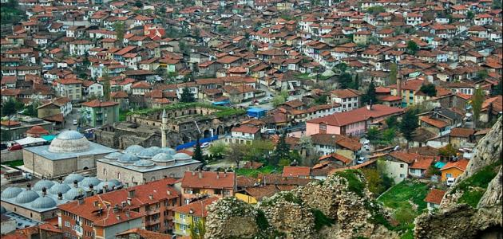

Osmaniye

osmaniye sehir bilgiler
Osmaniye
, Türkiye Cumhuriyeti’nin 80. ilidir. 1933'e kadar il olan Osmaniye'nin eski dı Cebelibereket'tir. O tarihte Adana iline bağlanmış, 24 Ekim 1996 tarihinde yapılan yasal düzenlemeyle tekrar il olmuştur. Akdeniz Bölgesi’nde, Çukurova’nın en doğusunda yer alır. 3.767 kilometrekarelik yüzölçümüne sahip Osmaniye topraklarının %42’si ormanlık alan,% 39’si ekili dikili tarım alanı, %17’si tarıma elverişsiz arazi ve %2’si diğer arazilerden oluşmaktadır. 2020 sonu itibarıyla nüfusu 553.012'tir.[3] Ünlü sanatçı Aşık Feymani bu ilde doğmuş ve halen bu ilde yaşamaktadır.
Tarihçe
Tam yeri kesin olarak bilinmemekle birlikte şimdiki Osmaniye'nin bulunduğu bölgede, 16. yüzyılda konar-göçer Türklerin iskan edilmesi ile Kınık nahiyesi oluşturulmuştur. Ancak Celali İsyanları sonucunda oluşan sosyal ve ekonomik buhranlar ile emniyetsizlik sebebiyle halk daha büyük nahiyelere ve şehirlere göç etmiş, 17. yüzyılın başlarından itibaren zamanla Kınık nahiyesi yok olmuştur. Kınık bölgesinde huzur ve sükunu yeniden tesis etmek isteyen Osmanlı Devleti, Dönek taifesini Kınık nahiyesinin bulunduğu yerin yanına/yakınına iskan ederek İsneyn Pazarı (Pazaryeri) nahiyesini oluşturmuş ise de birkaç yıl sonra Dönek taifesi bulunduğu bölgeyi terk etmiş ve bölgedeki konar-göçerlerin eşkiyalık faaliyetleri ile bölgenin emniyetsizliği devam etmiştir. Amanos (Nur) Dağları'nın adı, Kâfirdağı da denilmekle birlikte Gâvurdağı idi. Tanzimat Dönemi'nde Batının "gâvur" kelimesinden hoşnut olmaması sebebiyle Tanzimat ruhuna uygun olarak değiştirilmesi gündeme gelmiştir. Padişah I. Abdülmecit'in kararı ile Gâvurdağı'nın adı 5 Şubat 1854 tarihinde Cebel-i Bereket (Bereket Dağı) olarak değiştirilmiştir. Yukarı Çukurova denilen Gâvurdağı ve eteklerinde devlet ototesi zayıflamış,eşkiyalık faaliyetleri sebebiyle bölge uzun yıllar emniyetsiz kalmış, verimli topraklar ekilip biçilmediğinden bataklık haline gelmiştir. Devlet otoritesini yeniden tesis ederek bölgenin emniyetini sağlamak ve arazilerin ekilip biçilmesini sağlamak için konar-göçerlerin iskan edilmesi zorunlu görülmüş ve iskan faaliyetlerini yerine getirmek üzere 1865 yılında Fırka-i Islahiye ordusu oluşturularak ordu komutanlığına Derviş Paşa, mülkî ıslahatları gerçekleştirmek üzere vezir rütbesiyle Cevdet Paşa tayin edilmiştir. Cevdet Paşa tarafından Hacı Osmanlı Köyü merkez olmak üzere 2 Ekim 1865 tarihinde köyün adına izafeten Osmaniye adı ile kaza ihdas edilmiştir. Osmaniye kazasının bağlı olduğu Payas Sancağı'nın adı 1879 yılında Cebel-i Bereket olarak değiştirilmiş ve sancak merkezi Yarpuz'a taşınmıştır.Osmaniye kazasının bağlı olduğu Payas Sancağı'nın adı 1879 yılında Cebel-i Bereket olarak değiştirilmiş ve sancak merkezi Yarpuz'a taşınmıştır.[4] 1908 yılında II. Meşrutiyet'in ilanı ile sancak merkezi Osmaniye'ye taşınmış, 1923 yılında Cumhuriyetin ilanı ile sancaklar vilayete dönüştürüldüğünden Cebel-i Bereket Vilayeti adını almıştır. Osmaniye 1 Haziran 1933 tarihinde ilçeye dönüştürülmüş ve Adana Vilayeti'ne bağlanmıştır.[5] TBMM'de 24 Ekim 1996 tarihinde kabul edilen 4200 sayılı Kanun ile Osmaniye yeniden il olmuş ve\ kanun 28 Ekim 1996 tarihli ve 22801 sayılı Resmi Gazetede yayımlanarak yürürlüğe girmiştir.[6]
Coğrafya
Akdeniz Bölgesi’nin doğu kesiminde yer alan Osmaniye, doğusunda Gaziantep, güneyinde Hatay, batısında Adana, kuzeyinde Kahramanmaraş illeri ile çevrilidir. Çukurova’da yer alan il topraklarını Orta Toroslar, Doğu ve Güneydoğu kesiminde de Nur Dağları ile bu dağların uzantısı Kösür (Gavur) Dağı (1.702 m.) engebelendirir. Bu dağların dışında ilin belli başlı yükseltileri ; Düldül Dağı(2.246 m), Koyunmelen Dağı (2.108 m), Kelda Dağı (1.900 m), Büyük Kösür Dağı (1.626 m), Tozaklık Dağı (1.616 m), Hacıdağı (1.549 m), Honazin Gediği (1.086 m), Haçbel Dağı (1.426 m), Boğatepe ( 850 m)’dir. İlin etrafını çevreleyen bu dağlarda irili ufaklı pek çok yayla bulunmaktadır. Zorkun, Ürün, Fenk, Türkmenpınarı[7], Mitisin ve Maksutoğlu yaylaları bunların başında gelmektedir. Çukurova’nın Osmaniye ili sınırları içerisinde kalan kesimi Yukarı Ova olarak anılmaktadır. İlçe topraklarını Ilısu ve Akçasu Çaylarını toplayan Ceyhan Nehri sulamaktadır. İl merkezi deniz seviyesinden 118 m. yüksekliktedir. İlin yüzölçümü 3.767 km²'dir. Genellikle tarım yapılan düz alanlar dışında, dağlarda kayın, meşe, gürgen, sedir, kızılçam ve karaçam ormanları bulunmaktadır. Osmaniye’nin iklimi, dağlık ve ovalık alanlarda farklılık göstermekle birlikte, tipik Akdeniz iklimi özelliği göstermektedir. Yazlar sıcak ve kurak, kışlar ılık ve yağışlı geçer. Ceyhan Nehri’nin Osmaniye’den geçerek Akdeniz’e dökülmesi ile ayrı bir önem katmaktadır. Ceyhan Nehri üzerinde Türkiye’nin en yüksek barajı olan Berke Barajı ve Aslantaş Barajı enerji ve tarımsal sulamaya ciddi yarar sağlamaktadır. Ayrıca Türkiye’nin en büyük kurulu rüzgâr enerjisi santrali olan Bahçe ve Hasanbeyli ilçeleri arasında bulunan Gökçedağ RES’ten yıllık 500 milyon kWh elektrik üretilmektedir. Yazları sıcak ve kurak kışları ılık ve yağışlı geçen ilde tarım, ekonomik açıdan büyük önem arz etmektedir. Hayvancılık, ticaret, dokumacılık ve sanayi diğer ekonomik iş kolları arasında bulunmaktadır. Tarım ürünleri arasında dünya üretiminde önemli bir yer edinmiş olan Osmaniye, yer fıstığı ile dünyaya açılmıştır. Yer fıstığı ve turp üretiminde Türkiye’nin %75 civarında merkez nokta olan Osmaniye mutfağı ile de ön plana çıkmaktadır. İçli köfte, mercimek köftesi, çiğ köfte,kısır, tırşik, toğga çorbası ve bayram kömbesi, kısır gibi çeşitler mutfak tatlarının önde gelen yemekleridir. 7 ilçesi bulunan Osmaniye'nin turistik noktaları Karatepe-Aslantaş Açık Hava Müzesi (Kadirli), Hierapolis (Kastabala-Cevdetiye), Flaviapolis (Kadirli) ve Hemite (Gökçedam) antik kentleri, Ala Camii (Kadirli) onlarca kalesi ve irili ufaklı yaylalarıdır
Yönetim
2020 yılında TÜİK verilerine göre merkez ilçeyle beraber 7 ilçe, 14 belediye, bu belediyelerde 133 mahalle ve ayrıca 159 köy vardır.[3] İllerde protokolde ilk sırada yer alan Vali, merkezi yönetimi temsil eder ve Cumhurbaşkanı tarafından atanır. Büyükşehir dışındaki illerde yerel yönetim, şehirler düzeyindedir. Belediye Başkanı, belediye sınırları içinde kalan seçmenin oy çokluğu ile seçilir. Ayni seçmen İlçe Belediye Meclisi için de oy kullanarak ilçelerin belediye meclislerini oluşturur. İldeki bütün seçmenler ayrıca il genel meclisi için de oy kullanarak, İl Genel Meclisinin oluşumunu sağlarlar. İl genel meclisi ve belediye meclisi üyelikleri için yapılan seçimlerde, onda birlik baraj uygulamalı nispi temsil sistemi, belediye başkanlığı seçiminde ise çoğunluk sistemi uygulanır İl genel meclisi ve belediye meclisi üye sayıları ilçe nüfusuna göre, kontenjandan kalan sayıların partilere dağılımı ise D'Hondt Sistemine göre belirlenir (Kanun:2972-Madde:23) İl Genel Meclisi, İl Özel İdaresinin karar organıdır, başkanını üyeleri arasından gizli oyla seçer. Ayrıca, İl Genel Meclisi kendi içinden gizli oyla bir yıl görev yapacak 5 kişilik İl Encümenini seçer.[8][9] Merkezi yönetim, Vali ve İl Müdürlerinden oluşur. İl Özel İdaresi (İl Genel Meclisi ve İl Encümeni) seçilmişlerden oluşur, ancak Vali başkanlığında görev yapar. Yerel yönetim ise belediye başkanları ve belediye meclislerinden oluşur. Osmaniye Valisi, 1976-Karaisalı doğumlu Dr. Erdinç Yılmaz’dır. 18 Haziran 2020 tarihinde Tepebaşı Kaymakamı iken atanmıştır.[10] Osmaniye Belediye Başkanı, 1961-Osmaniye doğumlu Kadir Kara (MHP), 31 Mart 2019 seçimlerinde %54,44 oy oranıyla seçilmiştir.[11] 2019 Türkiye yerel seçimleri sonuçlarına göre Osmaniye İl Genel Meclisi üye sayısı, 12 AK PARTİ, 10 MHP ve 3 CHP olmak üzere 21’dir.[12] Osmaniye Belediye Meclisi ise 21 AK Parti, 2 CHP ve 1 İYİ Parti olmak üzere 25 üyeden oluşur.[13] 2018 Genel seçimleri sonucu, Osmaniye'yi temsilen TBMM'e AKP'den 2 milletvekili (Mücahit Durmuşoğlu, İsmail Kaya), CHP'den 1 milletvekili (Baha Ünlü) ve MHP'den 1 milletvekili (Devlet Bahçeli)seçilmiştir.[14]
Bahçe
Düziçi
Hasanbeyli
Kadirli
Sumbas
Toprakkale
Bahçe_photo
Düziçi_photo
Hasanbeyli_photo
Kadirli_photo
Sumbas_photo
Toprakkale_photo
osmaniye_photo
Sumbas_photo
Hasanbeyli
Toprakkale_photo
Bahçe_photo
Toprakkale